Modular Bending (Desk Organizer)
Transformable and Modular Desk Organizer by Laser Cutting Cardboard
Project Description
Modular Bending: Transformable and Modular Desk Organizer." This project utilizes laser-cut cardboard to craft a versatile and adaptable desk organizer. The design involves 2D cardboard pieces that are folded and bent to seamlessly interlock, creating a 3D module. This module is not just a singular module, but it is designed to be aggregated in an adjustable linear manner, offering flexibility in organization.
The design system leverages the idea of modular construction. Each element of the modules is engineered to hold the others, resulting in the creation of a robust and reliable organizational system. The convergence of bending elements with linear components within this system generates a unique module capable of maintaining its structural integrity. Lastly, different scoring techniques on the cardboard sheet's surface are employed for folding vs. bending.
Documentation
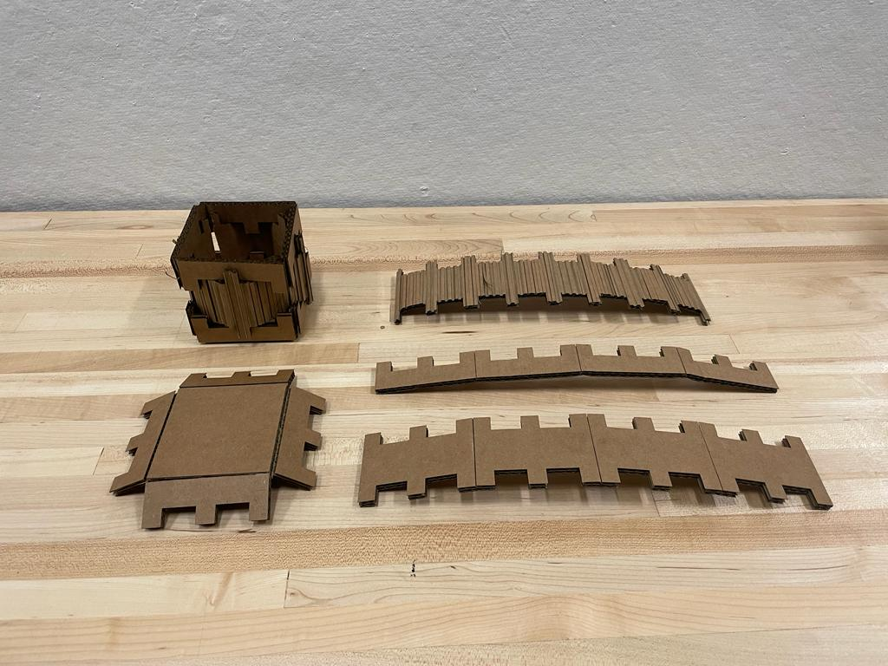
2D pieces are folded and bended into each other to create a 3D module.
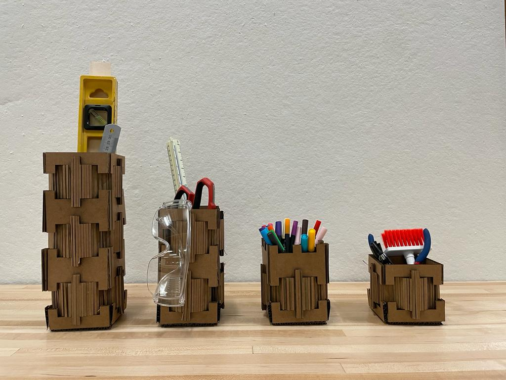
This 3D module is then aggregated in a adjustable linear manner.
Design System
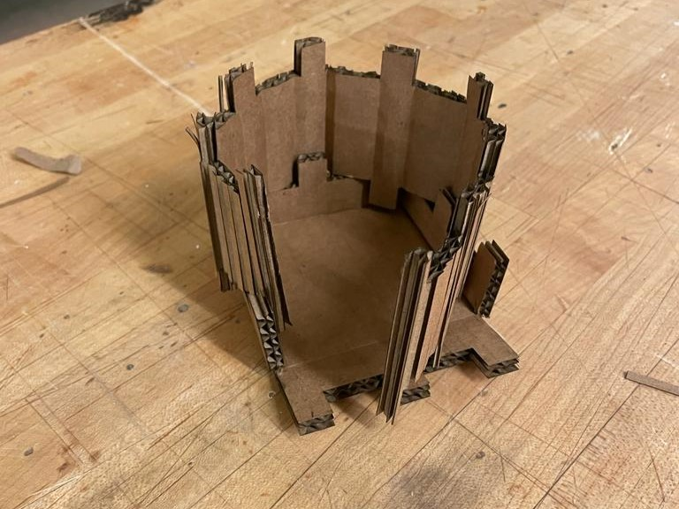
The elements of the modules hold each other to create a rigid system.
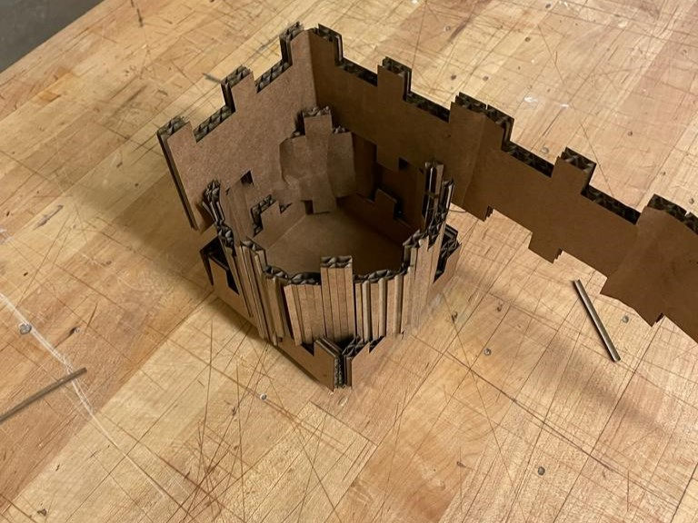
The bending elements interweaves with the linear elements creating a module that holds its shape.
Process
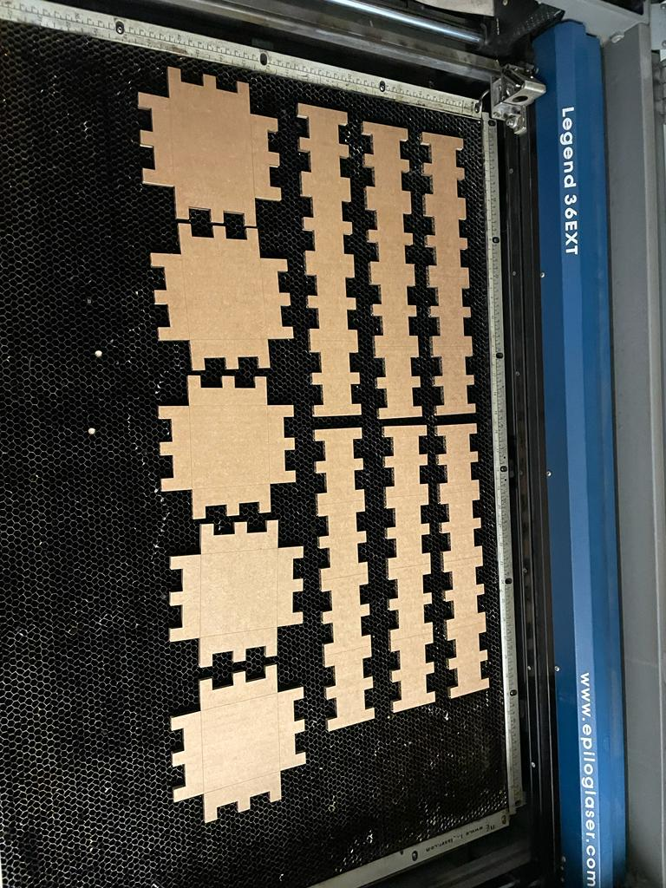
Creating fold patterns on cardboard sheets to facilitate them folding inwards.
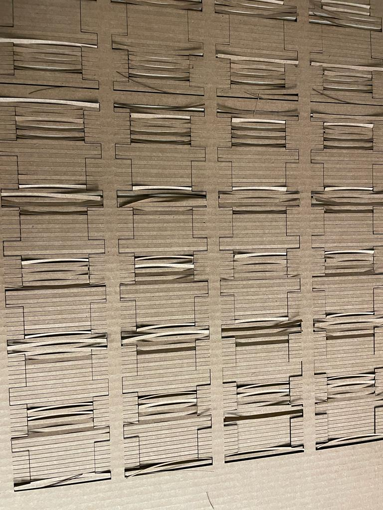
Scoring a cardboard sheet's surface to selectively remove material, enabling it to easily bend into a curvature.
Laser Cut Group
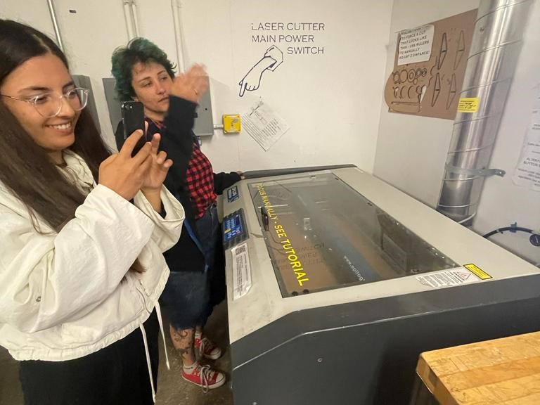
Group Tests
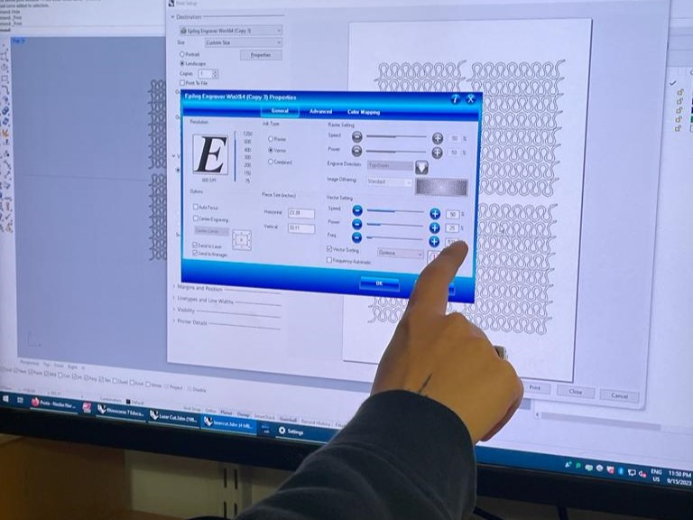
Setting Tests
Settings
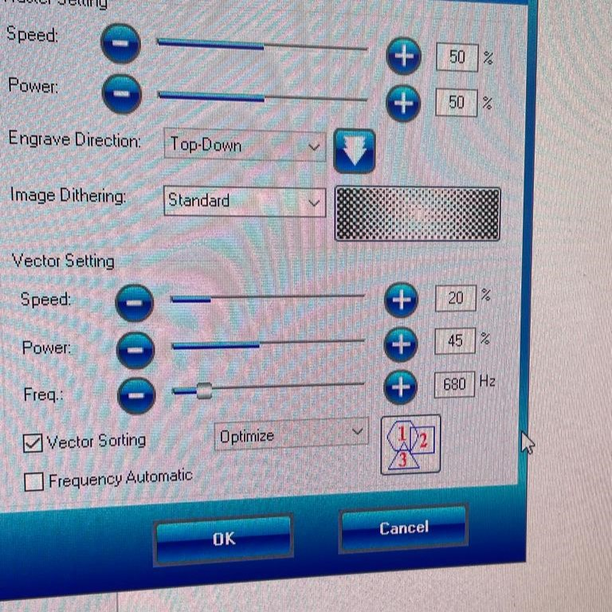
Cut Settings
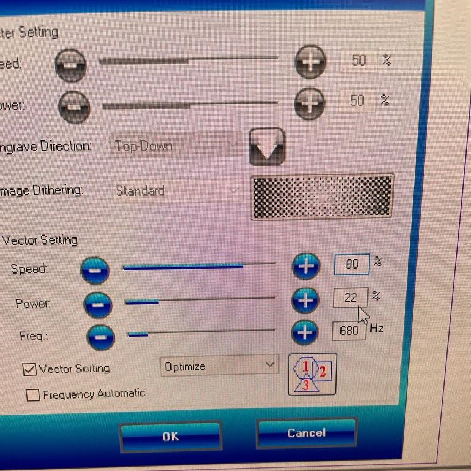
Score Settings
Vinyl
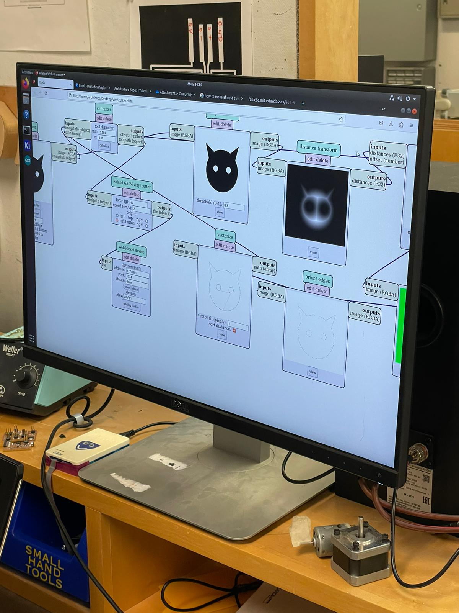
Vinyl Cutting Process
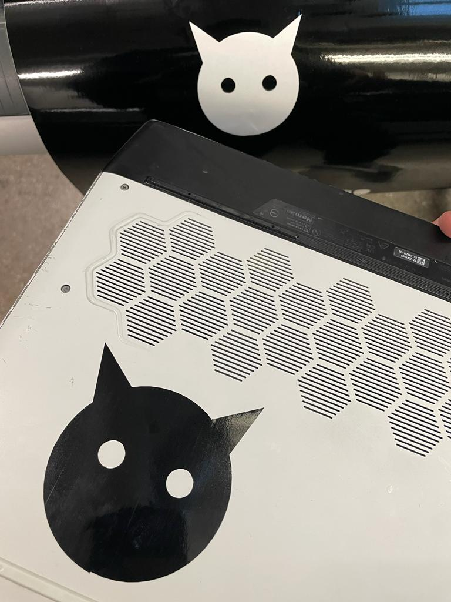
Sticker on Laptop